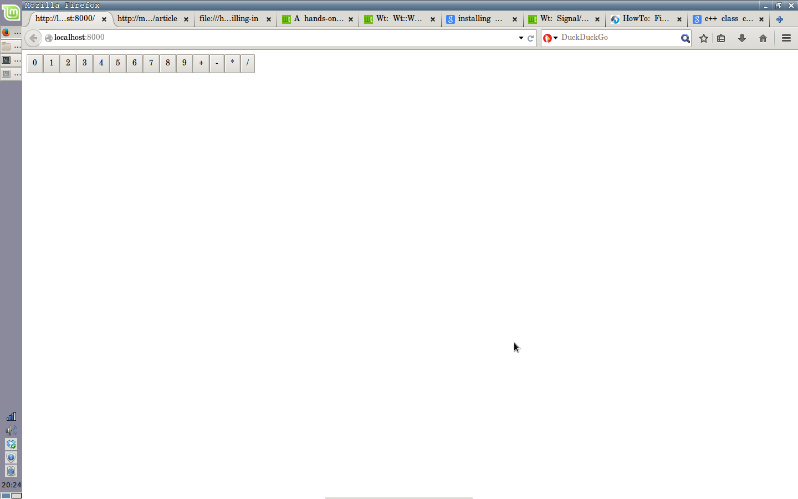
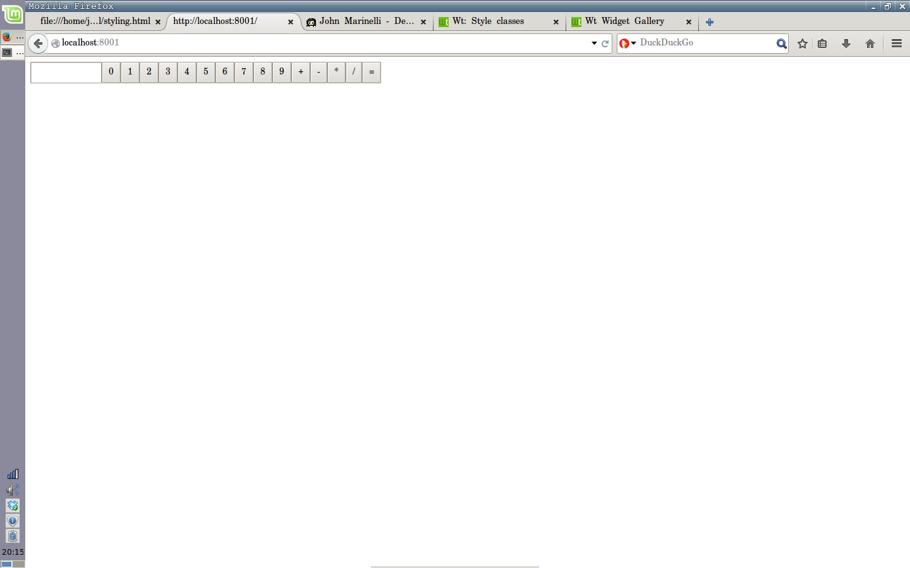

Now we'll start filling in the gears of our calculator, the Wt way. The first order of business would be to actually have something display on the page. Let's start writing our constructors for the buttons and display, and adding them to the page.
/* CalculatorDisplay.cpp */
CalculatorDisplay::CalculatorDisplay(WContainerWidget* parent) : WLineEdit(parent), mValue(""), mValidator(new WIntValidator())
{
mValidator->setMandatory(true);
this->setValidator(mValidator);
}
CalculatorDisplay::~CalculatorDisplay()
{
delete mValidator;
mValidator = nullptr;
}
/* NumberButton.cpp */
NumberButton::NumberButton(int val, WContainerWidget* parent) : WPushButton(std::to_string(val), parent), mValue(val)
{
}
/* OperationButton.cpp */
OperationButton::OperationButton(std::string op, WContainerWidget* parent) : WPushButton(op, parent), mOperation(op)
{
}
Now that we can construct our calculators' buttons, we'll write helper functions to initialize our number and operation buttons before we construct our CalculatorWidget.
#TODO: explain addWidget
/* CalculatorWidget.hpp */
private:
enum { numberCount = 10 };
enum { opCount = 4 };
NumberButton* mNumbers[numberCount];
OperationButton* mOperations[opCount];
CalculatorDisplay* mDisplay;
/* Helper functions to initialize buttons */
void initNumberButtons();
void initOperationButtons();
/* CalculatorWidget.cpp */
void CalculatorWidget::initNumberButtons()
{
for(int i = 0; i < numberCount; ++i){
mNumbers[i] = new NumberButton(i, this);
addWidget(mNumbers[i]);
}
}
void CalculatorWidget::initOperationButtons()
{
mOperations[0] = new OperationButton("+", this);
mOperations[1] = new OperationButton("-", this);
mOperations[2] = new OperationButton("*", this);
mOperations[3] = new OperationButton("/", this);
for(int i = 0; i < opCount; ++i){
addWidget(mOperations[i]);
}
}
CalculatorWidget::CalculatorWidget(WContainerWidget* parent) : WContainerWidget(parent)
{
initNumberButtons();
initOperationButtons();
}
Now that we have our constructors defined, we can add our buttons to the page! Add the following to our createApplication() back in main.cpp:
/* main.cpp */
WApplication* createApplication(const WEnvironment& env)
{
WApplication* app = new WApplication(env);
CalculatorWidget* calculator = new CalculatorWidget(app->root());
return app;
}
Now you should have some sweet ass buttons on your app!

Now we're going to hook up our NumberButtons to our CalculatorDisplay, so that when we click a button, the CalculatorDisplay gets updated and displays our new number. For example, if we click '9' and then '1', the display will show '91'. For this, we'll need two things: a helper function for getting our value from the NumberButton, and a helper function for pushing that value into our display.
/* NumberButton.hpp */
public:
NumberButton(int val, WContainerWidget* parent=0);
char getValue();
/* NumberButton.cpp */
char NumberButton::getValue()
{
return std::to_string(mValue)[0];
}
Since our CalculatorDisplay is a string, we can only push char's into it - not std::strings. Since our number will only be a value between 0-9, we take the [0]th element of the string and return it.
/* CalculatorDisplay.hpp */
public:
CalculatorDisplay(WContainerWidget* parent);
void push(char num);
/* CalculatorDisplay.cpp */
void CalculatorDisplay::push(char num)
{
mValue.push_back(num);
setText(mValue);
}
We can use std::strings the same way as std::vectors; we just push_back() elements that we want appended to the end of our string.
setText() is a Wt function - it's pretty straightforward, and sets the text of the element to the argument.
Now we have to add our CalculatorDisplay to our CalculatorWidget. In our CalculatorWidget, we'll initialize the CalculatorDisplay object and use addWidget() to add it to the CalculatorDisplay.
/* CalculatorWidget.cpp */
CalculatorWidget::CalculatorWidget(WContainerWidget* parent) : WContainerWidget(parent)
{
mDisplay = new CalculatorDisplay(this);
addWidget(mDisplay);
initNumberButtons();
initOperationButtons();
}
Feel free to take a look at how our baby calculator looks at this point. Everything from here on will be functional, so don't expect the physical aspect of it to change much until the styling section.
It's time to introduce the workhorse of our application - std::bind. INSERT SOME SHIT ABOUT STD::BIND HERE.
We're going to std::bind our NumberButtons to our CalculatorDisplay in a way such that the NumberButton's character value will be pushed into the CalculatorDisplay. Since we'll need to set every button to respond to a click, we'll put this code in our for-loop in the initNumberButtons() function of CalculatorWidget.
/* CalculatorWidget.cpp */
void CalculatorWidget::initNumberButtons()
{
for(int i = 0; i < numberCount; ++i){
mNumbers[i] = new NumberButton(i, this);
addWidget(mNumbers[i]);
mNumbers[i]->clicked().connect(std::bind([&] (char num) {
mDisplay->push(num);
}, mNumbers[i]->getValue()));
}
}
See how this works? The connect() function takes in an anonymous function that requires a char for the mDisplay->push() function. We get this char from mNumbers[i]->getValue(), which we supply as an argument after the anonymous function.
Recompile and view the app to see our progress so far. The calculator's display should now respond when you hit a number button.
Before we continue on, we have to start considering how our calculator functionality will actually work. Our calculator will be really simple - click a number, click an operation, and click an equals button to get the result. This means we have to add an equals button, a field to store our operation, a field for our result, and two fields to represent the left-hand and right-hand sides of the equation. These will all be in our CalculatorWidget.
/* CalculatorWidget.hpp */
class CalculatorWidget : public WContainerWidget
{
private:
enum { numberCount = 10 };
enum { opCount = 4 };
std::string mOperation;
NumberButton* mNumbers[numberCount];
OperationButton* mOperations[opCount];
CalculatorDisplay* mDisplay;
double mLHS;
double mRHS;
double mResult;
std::string mOperation;
void initNumberButtons();
void initOperationButtons();
public:
CalculatorWidget(WContainerWidget* parent);
};
/* CalculatorWidget.cpp */
CalculatorWidget::CalculatorWidget(WContainerWidget* parent) : WContainerWidget(parent), mOperation("+"), mLHS(0), mRHS(0), mResult(0)
{
mDisplay = new CalculatorDisplay(this);
/* Notice that addWidget(mDisplay) disappeared! */
initNumberButtons();
initOperationButtons();
mEquals = new WPushButton("=", this);
}
We can remove addWidget() because when you construct a WObject with a parent, the WObject will automatically be added to the parent.
Let's also add a helper function to perform the specified operation with our mLHS and mRHS values.
/* CalculatorWidget.hpp */
class CalculatorWidget : public WContainerWidget
{
private:
/* ... */
void performOperation();
/* ... */
};
/* CalculatorWidget.cpp */
double CalculatorWidget::performOperation()
{
if(mOperation == "+") mResult = mLHS + mRHS;
else if(mOperation == "-") mResult = mLHS - mRHS;
else if(mOperation == "*") mResult = mLHS * mRHS;
else if(mOperation == "/") if(mRHS != 0) mResult = mLHS / mRHS;
mLHS = mResult;
mRHS = 0.0;
return mResult;
}
Let's review what we've done so far:
We're almost done with our calculator - all that's left is to implement the actual calculator logic. This only takes a couple of std::bind()'s.
First, let's figure out what we do when an operation button is clicked. We'll store the selected operation in our mOperation field, and also store the value that's in the CalculatorDisplay. Let's write a helper function to retrieve values from our display really quick, and a function to clear the field when the user hits an operation button.
/* CalculatorDisplay.hpp */
class CalculatorDisplay : public WLineEdit
{
private:
std::string mValue;
WIntValidator* mValidator;
public:
CalculatorDisplay(WContainerWidget* parent=0);
void push(char num);
double getValue();
void clear();
~CalculatorDisplay();
};
/* CalculatorDisplay.cpp */
double CalculatorDisplay::getValue()
{
/* STL function for turning a string into double */
return std::stod(mValue);
}
void clear()
{
mValue = "";
setText("");
}
We'll also write a getter function to grab an OperationButton's value - so if the user clicks on the "+" button, we'll receive a "+" from our OperationButton.
/* OperationButton.hpp */
class OperationButton : public WPushButton
{
private:
std::string mOperation;
public:
OperationButton(std::string op, WContainerWidget* parent=0);
std::string getOperation();
};
std::string OperationButton::getOperation()
{
return mOperation;
}
Now we can write our operation button logic - save the selected operation and the value that's in our CalculatorDisplay. Since all operation buttons will need this functionality, we'll write the code in our initOperationButtons() function.
Since a user can click an operation button multiple times, we'll have to check if mLHS is 0.0 - if it is, then we'll set mLHS to the value in CalculatorDisplay. If it isn't then mRHS will get the value in CalculatorDisplay. This way, mLHS won't get overwritten if it's nonzero. We can set up a quick helper function for this as well - let's just call it setEquation().
/* CalculatorWidget.hpp */
class CalculatorWidget : public WContainerWidget
{
private:
/* ... */
void setEquation(double val);
/* ... */
};
/* CalculatorWidget.cpp */
void CalculatorWidget::setEquation(double val)
{
if(mLHS == 0.0) mLHS = val;
else mRHS = val;
}
void CalculatorWidget::initOperationButtons()
{
mOperations[0] = new OperationButton("+", this);
mOperations[1] = new OperationButton("-", this);
mOperations[2] = new OperationButton("*", this);
mOperations[3] = new OperationButton("/", this);
for(int i = 0; i < opCount; ++i){
addWidget(mOperations[i]);
mOperations[i]->clicked().connect(std::bind([=] (std::string op) {
mOperation = op;
double val = mDisplay->getValue();
setEquation(val);
mDisplay->clear();
}, mOperation[i]->getOperation()));
}
}
Once again, we std::bind an anonymous function that takes in a std::string as input. We supply this input after the function definition. Inside the function, we store the operation selected, store the value from our display, set our LHS or RHS, and clear our display.
Almost done! Let's write our equals button to retrieve a RHS value, perform the operation, and set the display to our result. There won't be any more helper functions, we just have to implement the logic.
/* CalculatorWidget.cpp */
CalculatorWidget::CalculatorWidget(WContainerWidget* parent) : WContainerWidget(parent), mOperation("+"), mLHS(0), mRHS(0)
{
mDisplay = new CalculatorDisplay(this);
initNumberButtons();
initOperationButtons();
mEquals = new WPushButton("=", this);
mEquals->clicked().connect(std::bind ([&] () {
double val = mDisplay->getValue();
setEquation(val);
mDisplay->clear();
mDisplay->setText(std::to_string(performOperation()));
}));
}
That's it! It's an ugly little thing, but it works. Try compiling and seeing for yourself. The next section will deal with some basic styling - other than that, you have a very simple calculator built in Wt.